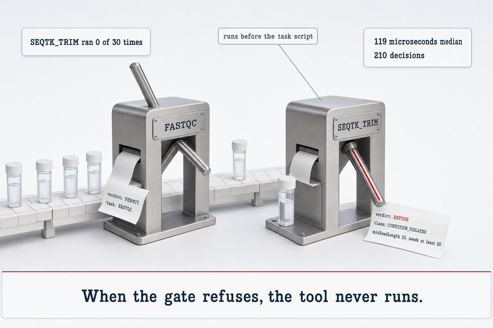
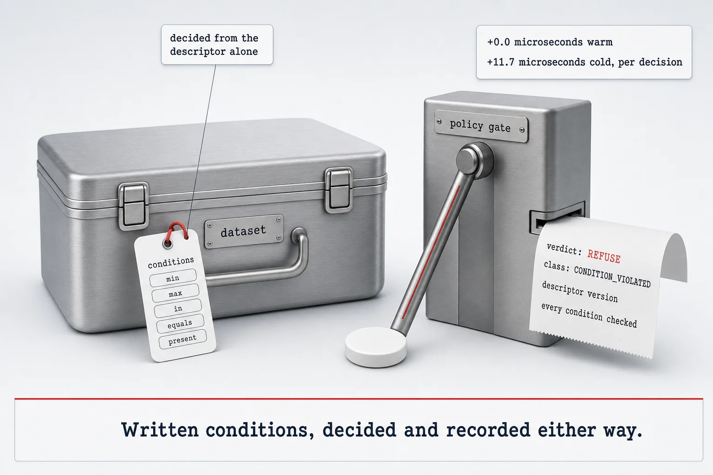
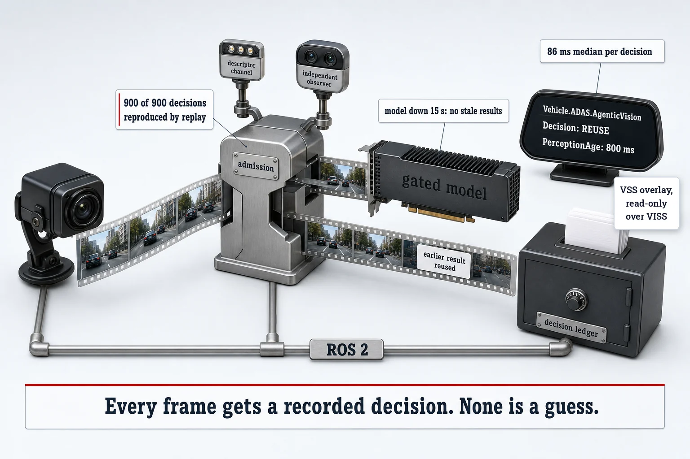
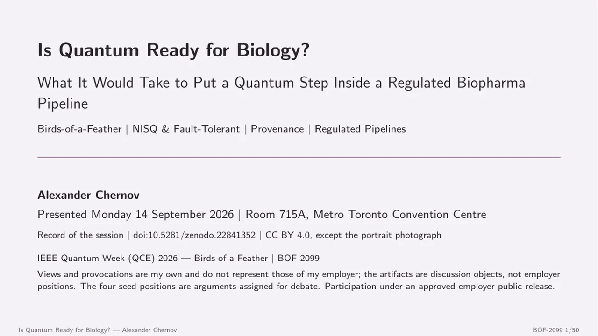
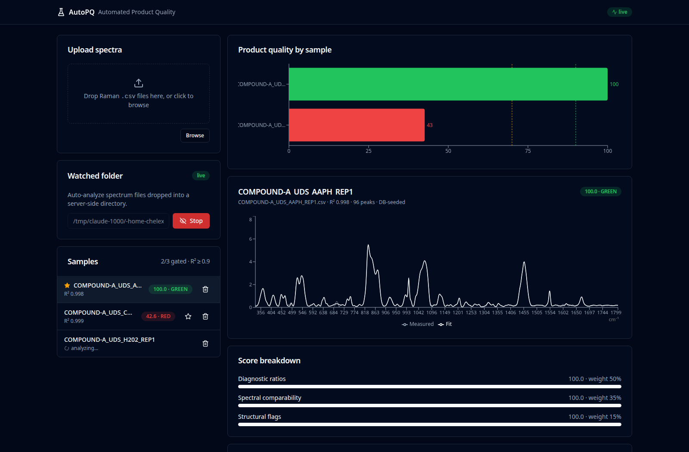
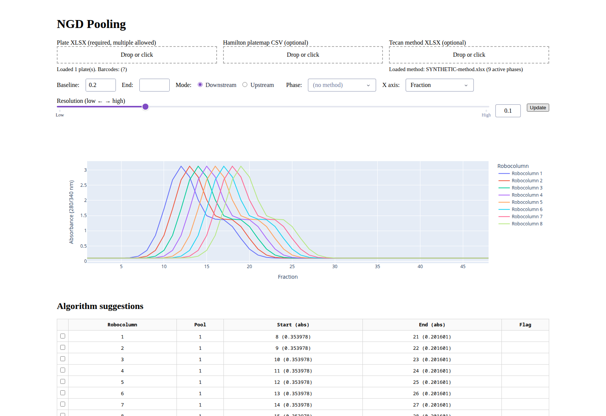
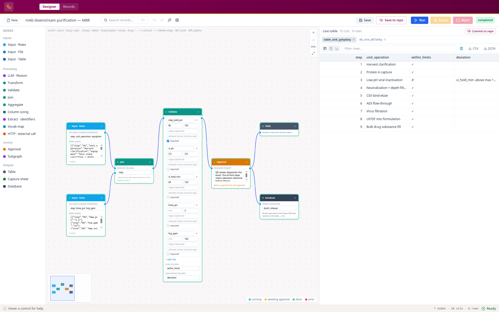
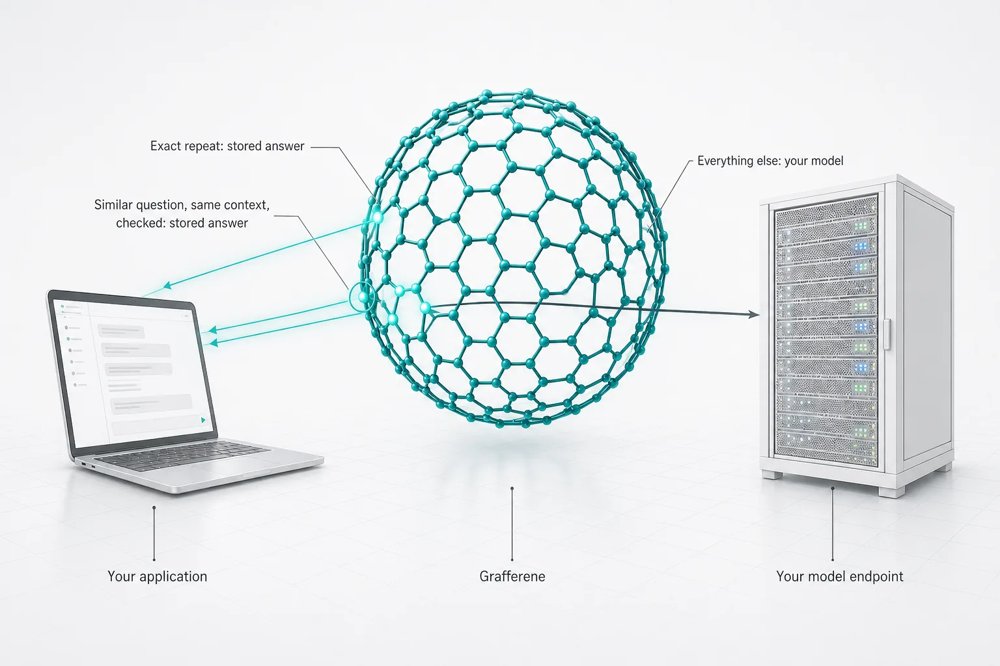

Principal Engineer · Agentic AI & scientific data systems ·
IEEE member
Something proposes under uncertainty — what decides whether it may act?Seventeen systems, one question.
Agent Scope answers it on a live cluster: the agent
proposes, the gate decides, and every decision leaves a record.
Grafferene answers it for a cache: a stored answer
reaches a user only when every check passes.
Agentic Crawl answers it for a crawler: a request
is sent only when the site’s rules allow it.
adam answers it for a clinical program: a model’s column
is accepted only when it reproduces the reference exactly.
Agentic Loom answers it on the plant floor: a recipe
step runs only when it is admitted or a person takes responsibility for it.
Agentic Delivery answers it for software delivery:
a change ships only when the gate has checked the evidence itself.
Agentic LIMS answers it for laboratory data: a result
enters a report only when it can be traced to its source and the dataset’s policy admits it.
Projects
The public ones first — they are the only entries a reader can
verify, and a verifiable entry earns the ones that follow it. Where a project has no public
URL that is stated rather than hidden behind a link that returns 404. Each title is also a
page of its own, which is what the copy button hands you.
A dataset that states what agents may do with it, and a contract that can be checked without seeing inside the implementation.
Specification plus reference implementation. The contract runs to fifteen assertions and eighty-five executable steps, portable across languages, and has been exercised against four runtimes, two dataset boundaries and one unrelated codebase — every one of them passing, with seventeen deliberately broken variants all caught.
Recorded from the live Admission showcase at agenticdatasets.org; the notes either side are read off the page at each state. Four principals send the same request: two are GRANTED and two REFUSED under clause AD-POL-005. Then the process engineer asks for yield and for outliers, and the analyst is refused detect_outliers. Every decision leaves an evidence row. Computed in the page, with no server and no model.
An open specification and reference implementation for datasets that carry their own behavioural contract. A dataset declares the operations it admits and the conditions under which it admits them, so a caller can decide from the descriptor alone rather than by convention or by asking someone.
The contract is fifteen normative assertions expressed as eighty-five language-neutral vector steps, which is what makes it checkable against an implementation without access to that implementation's internals. The reference architecture passes all fifteen across four runtimes and two dataset boundaries; a second implementation sharing no code with it passes all fifteen as well.
Mutation analysis is the part that keeps the suite honest: seventeen targeted violations, seventeen detected, with every assertion independently exercised. Mean detecting assertions per mutant is reported at 2.2 and deliberately not treated as an optimization metric, because tuning a suite to raise it would measure the suite rather than the contract.
References
Gebru et al. (2021). Datasheets for datasets. Communications of the ACM 64(12), 86–92. doi:10.1145/3458723
Wilkinson et al. (2016). The FAIR Guiding Principles for scientific data management and stewardship. Scientific Data 3(1), 160018. doi:10.1038/sdata.2016.18
Jia and Harman (2011). An Analysis and Survey of the Development of Mutation Testing. IEEE Transactions on Software Engineering 37(5), 649–678. doi:10.1109/TSE.2010.62
A gate that decides, for every task in a bioinformatics pipeline, whether it may run — and records why either way.
A Nextflow hook, a policy, and one decision record per task. End-to-end timing came to 119 µs at the median over 210 decisions, published as a corpus anyone can replay. The load-bearing outcome was not that number but establishing by experiment that AWS's managed service honours a directive its own linter called unsupported.

Two tasks of nf-core/demo at the gate, which runs through Nextflow’s process.beforeScript hook before each task script: FASTQC admitted, SEQTK_TRIM refused because the offered minimum read length is 10 where the descriptor requires 20. A record is written either way. Illustration; the figures are the measured ones.
Measured on a real nf-core pipeline rather than a synthetic one: 119 µs median for the whole gate process over 210 decisions, independently replayable from the published corpus.
The finding was not the latency. AWS's own Nextflow linter listed the hook the gate depends on among directives their managed service does not support, which would have put per-task governance out of reach. That file was two years stale and already contradicted by AWS's current documentation for a neighbouring directive. Treated as a hypothesis and probed against a local control: it runs. The gate now permits and refuses per task on the managed service.
Transferable principle: when an enforcement boundary matters, validate it experimentally rather than assume the documented boundary is the real one.
References
Di Tommaso et al. (2017). Nextflow enables reproducible computational workflows. Nature Biotechnology 35(4), 316–319. doi:10.1038/nbt.3820
Ewels et al. (2020). The nf-core framework for community-curated bioinformatics pipelines. Nature Biotechnology 38(3), 276–278. doi:10.1038/s41587-020-0439-x
Croissant can write down data-use conditions. No version of it specifies how any of them is evaluated.
What the descriptor leaves open, this closes: five operators, one verdict per request, and an audit trail behind it. Authority and conditions turn out to disagree in both directions, neither permit set containing the other, and the price of deciding is published rather than estimated at +0.0 µs warm, +11.7 µs cold.

A dataset whose descriptor carries its conditions in the profile’s five operators, a gate that decides a request from them alone, and the record it prints either way — here a refusal. Illustration; the overhead figures are the measured ones.
No decision procedure, no bound on what a condition costs to check, no defined outcome for a condition an implementation cannot evaluate, and no record of what was checked.
This profile closes that: a dataset declares the operations it admits and the conditions under which it admits them, from a closed set of five operators, so a gate can decide from the descriptor alone and leave a decision record. Two carriers that decide identically are compared as whole decision records.
The measured result is the interesting one. Caller-side authority and data-side conditions disagree in both directions — each refuses requests the other admits, and neither permit set contains the other. Overhead disclosed rather than assumed: +0.0 µs warm, +11.7 µs cold per decision. All emitted documents load under mlcroissant 1.1.0 with zero errors.
Full-length article under review at the Journal of Web Semantics.
References
Akhtar et al. (2024). Croissant: A Metadata Format for ML-Ready Datasets. DEEM '24, SIGMOD/PODS workshop, 1–6. doi:10.1145/3650203.3663326
W3C (2018). ODRL Information Model 2.2. W3C Recommendation. w3.org/TR/odrl-model
Lawson et al. (2021). The Data Use Ontology to streamline responsible access to human biomedical datasets. Cell Genomics 1(2), 100028. doi:10.1016/j.xgen.2021.100028
2025 – present · Independent research, unaffiliated with any employer.
The descriptor decides whether to look again — and the decision, not only the detection, is what gets recorded.
Real drives from two cars, 236,130 frames: a content-triggered refresh hid 2.01 points fewer scene changes than a timer at the same share of skipped model calls. The decision layer now also runs live on ROS 2 and the Vehicle Signal Specification, and a recorded live run replays to the same decision on every frame.

The live stack as built, drawn as objects: frames arrive over ROS 2, an admission layer decides for each one whether the gated model runs or an earlier result is reused, an independent detector watches alongside, and every decision goes to a ledger and to a read-only VSS overlay. The three figures on the illustration are measured.
Vision models are normally run on every frame. That is the safe default and an expensive one. The narrower question is whether a cheap scene descriptor can decide when the previous interpretation still holds, and whether the cost of being wrong about that can be measured rather than assumed.
The first measurement: across 1,712 contiguous dashcam frames at 5 Hz, a class-count descriptor skipped 43.6% of candidate model calls and left 28.5% of material scene changes without refreshed perception. Adding spatial and scale information brought the second figure to 9.1%, and cost reuse to do it. The result worth reporting is not a single optimum but that the tradeoff is measurable, which turns scene representation into an explicit engineering parameter rather than an implementation detail.
A second, independent detector evaluates the same frames, so the measurement does not rest on the detector that also defines the state being evaluated. The two disagreed about the presence of vulnerable road users on 9.5% of frames. Neither is ground truth — both are detectors — so that figure is disagreement, not an error rate, and it is reported as such.
The same measurement then ran at scale on comma2k19, a public set of commuting drives: 94 drives of two cars at 5 Hz, graded by the independent detector. On the 84 drives with complete recordings, refreshing when the content warranted it hid 2.01 percentage points fewer material changes than refreshing on a timer at an equal rate of reuse (95% interval 1.31 to 2.70, resampling whole drives within each car). The analysis was fixed in writing before the last chunk's results existed; on that held-out chunk alone the difference was 3.27 points. The earlier dashcam study reproduces exactly on the new engine, 5,136 of 5,136 decisions.
The decision layer also runs live, on the interfaces a vehicle integration uses. A recorded drive plays through ROS 2 in real time, a ROS 2 node decides every frame, the gated model runs on a GPU only for the frames sent to it, and a detector of a different family runs alongside as an independent observer. Each decision is published on ROS 2 and as a read-only overlay in the COVESA Vehicle Signal Specification, read over VISS through an Eclipse KUKSA broker. Over three minutes of driving, replaying the node's recorded inputs reproduces its decision on 900 of 900 frames, four runs agree on every frame, and with the model service down for 15 seconds the 75 affected frames report no perception rather than a stale result. From frame arrival to decision takes 86 ms at the median, inside the 200 ms frame period.
Stated on the site rather than left to be discovered: the replay measurements invoke no vision model; they determine when a call would occur and what deferring it costs. The live stack does call one. Nothing here has been validated for use in a vehicle.
Transferable principle: a cache that hides a state change is not a performance question but a governance one, and the reuse decision has to be observable before anyone can argue about it.
References
Kang et al. (2017). NoScope: Optimizing neural network queries over video at scale. Proceedings of the VLDB Endowment 10(11), 1586–1597. doi:10.14778/3137628.3137664
Geifman and El-Yaniv (2017). Selective classification for deep neural networks. NeurIPS 2017. arXiv:1705.08500
Schafer, Santana, Haden and Biasini (2018). A commute in data: The comma2k19 dataset. arXiv preprint. arXiv:1812.05752
Zhao et al. (2024). DETRs beat YOLOs on real-time object detection. IEEE/CVF CVPR 2024, 16965–16974. doi:10.1109/CVPR52733.2024.01605
A variational quantum algorithm resubmits nearly the same circuit over and over. Whether the previous answer may be reused is a decision someone has to be able to audit.
Two demos, seeded and offline. One puts a nine-qubit assembly problem and a trained classifier behind a gate that logs every admission; the other drops quantum entirely for a fed-batch reactor model, to show what a regulated step is already expected to leave behind. Small enough to verify by brute force, and verified.

1 / 50
The 50-slide deck from BOF-2099, the Birds-of-a-Feather session at IEEE Quantum Week 2026 in Toronto: what evidence a quantum result must carry before a regulated biopharmaceutical workflow can evaluate it, with both demos as supporting material. Full deck on Zenodo, 10.5281/zenodo.22841352.
Two runnable demonstrations of what it takes to put a computational step inside a governed biology workflow. The first runs a published quantum genomics method and a trained quantum classifier on PennyLane behind a control plane that decides what may run and records what happened — admission control, rate limiting, a circuit cache and an event record, over QAOA de novo assembly with three reads and nine qubits, verified against brute force.
The second is deliberately not quantum: a mechanistic fed-batch CHO bioreactor under a contract of in-process limits, with a search controller that picks a feed plan from 256 candidates and writes the decision artifact. It is the yardstick — the kind of decision record a regulated bioprocess step already has to leave behind.
Neither demo claims quantum advantage. Every instance is small enough to check classically, and each one is checked. The demos are seeded and run offline, so the reported numbers repeat.
The companion control plane is offered to be attacked rather than admired: it runs entirely in the browser with no backend, so every verdict it reaches can be reproduced by the reader.
One engine over any source — search, grounded chat, an entity graph and MCP, governed on every surface.
Rust and React, desktop and browser. Connected sources become cited answers, a knowledge graph with a live ontology, and tools for Copilot, with access trimmed to each reader. First demonstrated on 4,115 laboratory assets.
Recorded live, in real time, in the gateway's static browser build, over a pseudonymised corpus of 4,115 lab-asset records: people, sites, labs and entity names are invented; the distributions are real. A search in plain words puts 12 hits on the graph; chat says where a freezer is from the record's own fields and cites 5 sources — this build has no language model, so the answer is extractive; the graph changes lens to lab, then status; and the source lists the 13 capabilities it publishes over MCP. Record text and identifiers are hidden in the recording; the notes are read off the page.
A Rust and React semantic gateway. One engine — extract, chunk, embed, index, serve — turns a data source into four surfaces: semantic search, grounded chat with citations, an interactive entity graph, and a Model Context Protocol surface of tools, resources and code-generation prompts for Copilot and any MCP client. Desktop through Tauri, web through WebAssembly. A document is anything a source yields: a file, a database record, an instrument run, an API response.
Sources connect rather than fork. Connectors cover SharePoint, S3, Postgres, SQL Server, local files, a laboratory asset platform's REST API and chromatography systems, and the view is data-driven per source, so adding one is a profile and a connector. Demonstrated on a 4,115-asset corpus.
The graph is a knowledge graph: entity kinds are classes, typed fields are properties, and relations are edges to follow. The ontology is derived live from the data, so it cannot drift from what is there, and a source can declare vocabulary hints — SNOMED CT, FHIR, MeSH, DCAT.
Governance holds on every surface. Attribute-based access control trims search, chat, graph and MCP results to the reader; every typed field keeps its change history; and authentication is configuration — open on a desktop, reverse-proxy SSO, API keys, or per-user OIDC such as Microsoft Entra. Documents can also be embedded in published pages as a card, a detail pane or the full body, resolved on every view and trimmed to the reader's access: a window on the source, not a copy of it.
Architecturally it is a repointing, not a rebuild: the same ingestion, entity graph, ontology and retrieval moved from documents to equipment without redesign. The thesis is a data foundation, not a chatbot — the conversational surface is the demo, the entity graph and its governance are the product.
Chernov (2026). Agentic Data Services: A Control-Plane Architecture for Adaptive Data Workflows. IEEE BigDataService 2026, 125–129. doi:10.1109/BigDataService70481.2026.00025
Mappings proposed, not applied — 426 nodes, 332 edges, 0 of 84 approved. A mapping waits for a reviewer.
Runs against CDISC's public pilot, ranking 415 candidate variables against 110 known-good pairs with embeddings frozen between runs so the comparison holds. Inference happens in the browser on WebGPU. On derivations a frontier model reaches 0.38 top-1 against 0.06 lexical, on a leak-free benchmark.
Keyframes recorded live in the browser build, on the public CDISC pilot; the notes either side are read off the page. AE.AEACN is selected, Qwen2.5-0.5B-Instruct (q4) loads into the tab (786 MB, first use only) and runs on the GPU through WebGPU, and proposes ADAE.AEACN at 80%. The panel says so outright — proposal only, not applied — and 0 of 84 mappings are approved. Time is compressed; the timings on the cards are the measured ones.
Mapping study variables to analysis variables is slow, manual and repeated per study. A model can propose mappings, but a proposal accepted because the model sounded confident is not a mapping — it is a guess with provenance attached.
Built on the public CDISC pilot: embedding retrieval over a 415-variable candidate pool against 110 gold pairs, with identical cached embeddings across every run so comparisons mean something. Candidate scoring runs in-page over WebGPU, so the data does not leave the browser. A mapping is always a proposal a reviewer accepts, never something applied automatically.
On the derivation split, the hard half, lexical and embedding retrieval reach top-1 accuracy of 0.06 and 0.08; a frontier model reranking the same candidates reaches 0.38, replicated across three fresh runs, and a 7B on-premises model 0.10. The benchmark was rebuilt after the gold answers were found leaking into the baselines' candidate text. The gain depends on CDISC variable names, and recall is now the constraint: the right answer is in the top 25 for 31 of 50 derivations.
Under review at the IEEE BIBM 2026 LLMBDA workshop.
References
CDISC. Analysis Data Model (ADaM). CDISC foundational standard. cdisc.org
A gate decides whether a score may exist — six spectra all fit at R² 0.988 or better. The reference scores 100; the five stressed samples score 25.4 to 54.0.
Pinned model, pinned thresholds, pinned provenance, 41 tests, and a Pyodide build that matches the native engine. What it caught is the part worth repeating: a component-rescaling step that looked right on every chart, correlation around 0.9, while actual fit quality had gone to −608 with nothing raising an error.

Six forced-degradation Raman spectra fitted in the browser: all six pass the R² ≥ 0.9 gate, and only the reference scores green. The selected sample fits at R² 0.998 and scores 54.0. Compound code replaced with COMPOUND-A.
Spectral scoring done in notebooks is not reproducible across analysts, and the reasoning behind a score is not recoverable afterwards. This is a scoring loop with model, thresholds and provenance pinned, covered by 41 tests, plus a browser-native build running the same Python engine in-page through a Pyodide worker — the port reproduces the native reference exactly.
The finding is the part worth carrying anywhere. A post-fit rescaling step matched each component to the data independently, ignoring overlapping neighbours; in dense spectra the rescaled components summed to about 35 times the data. Shape correlation still read around 0.9, so every visual check passed — while R² had collapsed to −608 and every derived ratio was untrustworthy, with nothing reporting an error. The underlying fit had been correct all along.
A quality metric that measures only shape will not notice a magnitude error. Two checks that fail differently are worth more than one check that passes twice. The fix adopts the rescaling only when it does not worsen the residual: R² −608 to 0.98.
References
Butler et al. (2016). Using Raman spectroscopy to characterize biological materials. Nature Protocols 11(4), 664–687. doi:10.1038/nprot.2016.036
Newville et al. (2014). LMFIT: Non-linear least-squares minimization and curve-fitting for Python. Zenodo. doi:10.5281/zenodo.11813
An algorithm proposes, an operator admits — eight chromatograms with pool suggestions, each pending Approve, Reject or Combine.
Takes plate-reader output, draws per-column traces, suggests cut points from second derivatives, and puts an approve-or-edit step in front of the robot. Detection was rebuilt rather than tuned: one sample recovered from 0.26 to 0.98, and an aggregation index that had spanned 1.3–2.7 settled to 0.09–0.53.

Eight Robocolumn chromatograms across two plates, with the algorithm's 16 pool proposals beside them, each awaiting Approve, Reject, Combine or Edit. Synthetic run.
Reads plate-reader output, generates per-column chromatograms, proposes pools with a second-derivative detection algorithm, and lets an operator approve, reject, combine or edit before exporting a bundle that drives the next robotic run.
Generic peak detection found bands opportunistically, and when a diagnostic band was missed the ratio depending on it came back absent — reported as missing data rather than as a detection failure. The rebuild bridges noisy interior dips so one peak does not split into two, derives cut points from shoulder valleys and inflections, and harmonizes bands across samples so ratios are computed over canonical windows rather than per-sample ones. A previously failing sample went from R² 0.26 to 0.98; an implausible aggregation-index range of 1.3–2.7 fell to 0.09–0.53.
Said plainly in the report: harmonization fixes consistency, not detection. Where the fit still misses a band the ratio is genuinely absent — not estimated, not quietly interpolated.
This tool was agentic before the word: an algorithm proposes, a human admits, a robot acts. Any autonomous version does not add a gate, it replaces one that was already load-bearing — a far higher bar than automating something ungoverned. And because the output actuates, a gate beside the execution path is worthless.
References
Shukla et al. (2007). Downstream processing of monoclonal antibodies—Application of platform approaches. Journal of Chromatography B 848(1), 28–39. doi:10.1016/j.jchromb.2006.09.026
Wiendahl et al. (2008). High Throughput Screening for the Design and Optimization of Chromatographic Processes – Miniaturization, Automation and Parallelization of Breakthrough and Elution Studies. Chemical Engineering & Technology 31(6), 893–903. doi:10.1002/ceat.200800167
Chinn et al. (2023). A comprehensive assessment of the applicability of RoboColumn as a chromatography scale-down model for use in biopharmaceutical process validation. Journal of Chromatography A 1710, 464391. doi:10.1016/j.chroma.2023.464391
Approval is a node, not a convention — typed ports, only same-typed ones connect, and human approval sits inside the grammar.
A designer for master batch records (MBR) that executes them as electronic batch records (EBR), in Rust and React, with a no-backend browser build for places that will not host a server. One spine underlies every recipe — source, pre-process, reason, approve, sink — and the records live in version control, so review, promotion and rollback are the ordinary git ones.

A platform mAb downstream purification MBR, executed in the browser build: nine unit operations joined to their in-process controls, checked against five MBR limits, then held at a QA approval node. The executed record on the right flags one step — viral-inactivation hold above its 120-minute limit. Illustrative batch values; limits follow published platform ranges.
Batch records are authored as documents and executed as programs, and the gap between the two is where validation effort goes. This is a visual builder in Rust and React where the MBR is authored as a graph and every run of it yields the EBR, including a browser-only build with no backend at all, so the authoring surface works where a server cannot be deployed.
The grammar is a visual pipeline with a type system: boxes are nodes, arrows are typed edges — rows, table, scalar, signal — and only same-typed ports may be wired. Every recipe instantiates one spine: source, pre-process, reason (AI), approve (human), sink. Human approval is a first-class node in the grammar rather than a workflow convention bolted on afterwards — the same conclusion as the pooling gate above, reached independently in a different domain. Records are governed in git: review, environment promotion, rollback.
Underneath it, twenty years back to pharmaceutical manufacturing execution systems in validated GxP environments.
References
IEC (1997). IEC 61512-1: Batch control — Part 1: Models and terminology (ISA-88). International standard. webstore.iec.ch
U.S. FDA. 21 CFR Part 11: Electronic records; electronic signatures. Code of Federal Regulations. ecfr.gov
Kelley (2009). Industrialization of mAb production technology: The bioprocessing industry at a crossroads. mAbs 1(5), 443–452. doi:10.4161/mabs.1.5.9448
2026 – present · Independent work, unaffiliated with any employer.
A topology map shows what is connected to what. The question in front of it is usually another: may this run here, and is it ready?
A control-plane view for agent systems. The same nodes rearrange by governance, readiness, provenance or risk; an operator chat answers by reading the live cluster; and changes pass a gate that refuses by default and keeps its reason. Two recorded demos: gene agents with a quantum capability, and an ops agent on live Kubernetes.
The ops-agent demo as recorded: 136 seconds against a running k3s cluster, captions burned in, and each result caption quoting the read-back the run stored. On screen the graph of operator, agent, gateway, gate and workloads changes as each order is decided, next to the chat and the trail of decision records behind it. The file is the one archived on Zenodo.The gene-agents demo as recorded: about 100 seconds from the running system, every caption quoting the record it describes. Evidence reaches the three agents in the order CIViC's curators reviewed it, each agent decides under its own policy file, and one capability request goes through the gateway to the quantum step. The file is the one archived on Zenodo.
Agent Scope draws an agent system — the agents, their policies, gateways, data sources and the workloads they act on — as one set of nodes and edges, and lets the viewer choose what anchors the layout. Ten projections ship: eight built in, and two that a Kubernetes profile contributes at runtime, which the client has never heard of and does not need to. Each link carries a small envelope of values the control plane already knows, such as policy compatibility, trust, readiness and provenance, and every value also drives its own visual channel, so one link can read as well governed and poorly provenanced at the same time.
Questions asked in words are answered by issuing real read commands against the live cluster — pods, events, logs, nodes, namespaces — and reporting what came back, not by inferring from the prompt. Asked which pods in a namespace were not ready, it named six, and kubectl showed the same six.
Mutations pass an admission gate first. In the recorded run, scaling a standard-tier workload from 2 to 4 replicas was admitted and reached the cluster; the same request against a critical-tier workload was refused, and its replica count stayed at 3. The only difference was a label on the resource, so the decision is made on data rather than in code. A mutation needs a proof-of-admission token that only the gate can construct; a request no rule matches is refused; and allows and denials alike leave a decision artifact with the rule, the reason and a trace id.
The first demo puts three agents on real clinical-evidence records from CIViC for EGFR, TP53 and BRCA1. Each agent holds a versioned policy file and cites its id, version and sha256 on every decision; at the default evidence floor, 140 of 269 EGFR items are refused for therapy claims, because the finding stands but using it to say a treatment will work does not. TP53 may request one capability, a QAOA contig assembly following the published QuASeR method on a simulator, and only through a gateway with its own allow-list. The run returns the correct ordering, reported with its margin of 0.0005 over the runner-up, and a request for real quantum hardware is refused by the gateway before anything is submitted.
The second demo gives an operations agent seven orders in chat on a live k3s cluster that it reaches only through a scoped service account. A read is answered from the cluster; an ordinary scale and an ordinary create are allowed; scaling a critical workload is escalated and changes nothing; a create that labels itself critical is refused as a claim by the order rather than a fact; a manifest from a public repository is decided object by object, one applied and two refused; and asked whether the cluster matches its repository, it answers true only when both sides answer. Every order ends with the cluster read back, and every record goes to a hash-chained ledger that catches an edited or dropped line on restart.
Everything described here runs and is measured on a real cluster: the projections, the read commands, the enforced gate and the decision artifacts, kept on a hash-chained ledger that survives a restart. The site publishes that status row by row, and the next step, reading policy from a cluster resource, goes through the one seam where policy is already assembled. The trace view in both demos is the published @agent-scope-ca/graph-canvas component, available on npm.
References
Sarkar, Al-Ars and Bertels (2021). QuASeR: Quantum Accelerated de novo DNA sequence reconstruction. PLOS ONE 16(4), e0249850. doi:10.1371/journal.pone.0249850
Griffith et al. (2017). CIViC is a community knowledgebase for expert crowdsourcing the clinical interpretation of variants in cancer. Nature Genetics 49(2), 170–174. doi:10.1038/ng.3774
Bergholm et al. (2018). PennyLane: Automatic differentiation of hybrid quantum-classical computations. arXiv preprint. arXiv:1811.04968
2026 – present · Independent work, unaffiliated with any employer.
What a cache saves depends on how much the traffic repeats. So it measures that first, without serving a single cached answer.
An LLM response cache that starts by watching. A week of real traffic yields a report of would-be hits and the stored replies it would have returned, and the owner decides from it whether, and how strictly, serving begins.

Grafferene drawn as a sphere of graphene cells between an application and its model endpoint: an exact repeat lands on its stored answer, a similar question asked in the same context lands beside its closest neighbors, is checked and gets the stored answer, and everything else passes through to the model. Illustration from grafferene.ca.The demo as recorded: 2 minutes 3 seconds of the deployed demo, in real time, captions on screen and no sound. 962 recorded WildChat turns from 176 users in three tenants are replayed through Grafferene, each request answered from the cache or sent on to the model with its reason on the record. A question typed into the page is decided in the browser by an 8-bit copy of the recording’s embedding model. Tenant A retires a model version and its answers leave in one wave: 433 removed, and 2 under a retention hold kept out of service; when a handbook page changes for Tenant B, 252 answers stay in Probation, marked as possibly out of date. Every number in a caption was read off the page as it was recorded. The file is the one archived on Zenodo.
Grafferene is a response cache for LLM endpoints. In measure-only mode it sits in front of an OpenAI-compatible endpoint for a week, every request still reaches the model, and the report shows what caching would have saved and the answers it would have served, side by side, for the owner to judge.
When serving is on, an answer comes from the cache only if every check passes: an exact repeat in the same tenant and namespace, or a reworded question asked in the same context as the original, optionally confirmed by a separate verification service. If verification cannot complete, the match is not served. Everything else goes to the model.
Measured on one node. Against vLLM on a laptop GPU, measure-only mode reported exactly the hits a serving run of the same 32-request trace produced, row by row, while all 32 requests reached the model. On that trace, built to repeat, a strict threshold served 13 of 32 and cut prompt tokens by 41% with no wrong answers on the trace; the same question under different instructions, or in another namespace, always reached the model. Over one million real embeddings (laptop CPU, search only), the approximate index found every match exhaustive search found, at 10 ms per search instead of 87 ms. Savings were checked against the model server’s own counters.
Stated on the site rather than left to be discovered: in public open chat only about 3% of prompts repeat across users, and on human-labeled look-alike question pairs about one similar-question match in five at the default threshold is a different question. That is why the report shows the answers, not only the rate.
Transferable principle: measure what a change would do on real traffic before letting it act, and show the cases it would get wrong.
References
Zhao et al. (2024). WildChat: 1M ChatGPT Interaction Logs in the Wild. ICLR 2024. arXiv:2405.01470
Wang et al. (2019). GLUE: A Multi-Task Benchmark and Analysis Platform for Natural Language Understanding. ICLR 2019 (source of the QQP question pairs). arXiv:1804.07461
Kwon et al. (2023). Efficient Memory Management for Large Language Model Serving with PagedAttention. SOSP 2023, 611–626. doi:10.1145/3600006.3613165
2026 – present · Independent work, unaffiliated with any employer.
A crawler that reads everything in order spends its budget where the links happen to lead. One with a goal goes straight there, and keeps every site’s rules.
A goal-driven web crawler. Given a goal and the sites to read, it follows the most promising link next, checks each request against scope, site terms, robots.txt and AI-crawler rules before sending it, and writes down every choice and refusal with its reason. A recorded demo replays its crawls of a generated test corpus.
The demo as recorded: 2 minutes 23 seconds of the deployed demo, captions on screen and no sound. One goal, every tent’s price and warranty, from the first request to the crawl’s own stop: a link to the cart refused without a request, two sites left alone because their terms forbid the crawl or are unclear, a session-id trap learned, and the run held against the corpus’s truth. Every number in a caption was read off the page as it was recorded. The file is the one archived on Zenodo.
Agentic Crawl is a web crawler with a goal. Told what to look for and which sites to read, it reads every start page first, then takes whichever queued link comes closest to the goal. Each link is scored on its own words (its text, its address, the title of the page it sits on) and on the page it was found on, by an embedding model that runs where the crawler runs. When two addresses that differ only by a parameter, such as a session id or a print view, return the same page, the parameter is learned and further copies are skipped. After a run of pages well below the best it has found, the crawl ends by itself and says why. What comes back is the pages, their content as an Agentic Dataset that says where each item came from, and the record.
The agent chooses the order; it never fetches anything itself. Every request, for every page and every redirect, passes the same checks before it is sent: the crawl’s scope, the site’s terms, its robots.txt and its rules for AI crawlers, none of which the agent can change. A refusal sends nothing and goes on the record with its reason. Each step is written as a Brain API decision record (the links weighed and their scores, what the rules said, what was taken and why) in a hash-chained log that can be verified afterward, and every extracted page carries where and when it was fetched and under which decision.
Measured on a test corpus built for checking crawlers exactly: nine generated sites and 1,799 pages, with every page’s content, link, rule, trap and change fixed before any crawl starts, and every request read from the sites’ own server logs rather than from the crawler. Across 36 recorded crawls and 39,718 requests, none reached a page that robots.txt, a site’s rules for AI crawlers or its terms put off limits, and each of the 1,210 refusals gave the reason the corpus itself gives. For a goal of 40 product pages, the agent found them all in 90 requests where a breadth-first crawl of the same sites under the same rules needed 1,121; for backup guides, forum advice and library books, 51 vs 297, 61 vs 1,718 and 75 vs 860. Session-id links that never end took two thirds of a breadth-first crawl’s requests; the agent fetched three copies, learned that the parameter changes nothing, and skipped the rest. A second, held-out corpus gives the same picture.
Extraction and change detection were measured the same way. Extracted text scored 0.972 F1 against the exact content of 1,648 pages, and no page lost more than half of it, including pages built from separate sections, which had lost a third of their text before. Re-crawled a day and a week later, all 1,650 changed-or-unchanged verdicts agreed with what had in fact changed, including on servers that kept reporting “unchanged” when it was not.
The demo replays recorded crawls in the browser in three linked views: the crawl as a tree growing from the agent through each site toward the goal’s pages, a request lane per site taken from the servers’ own log, and the decision trace behind each choice, with a Truth tab that holds each run against the corpus’s own answers. The test sites are generated, and their small vocabularies make matching easier than on real sites; a free pilot measures the same things on a customer’s own sites.
Transferable principle: let the agent choose the order, and keep the decision to send a request in checks it cannot change.
References
Chakrabarti et al. (1999). Focused crawling: a new approach to topic-specific Web resource discovery. Computer Networks 31(11–16), 1623–1640. doi:10.1016/S1389-1286(99)00052-3
2026 – present · Independent work, unaffiliated with any employer.
A model writes a clinical derivation in seconds. It counts only when its column reproduces the reference, row for row, in a verdict anyone can re-run.
A check for AI-written statistical programs: a model drafts each ADaM column with admiral, the draft runs in isolation on public SDTM data, and the column counts only if it equals the published reference exactly. Programs and verdicts stay on the record with their reasons, and a browser can reproduce every verdict.
The demo as recorded: 1 minute 57 seconds of the deployed demo, captions on screen and no sound. An accepted derivation, the screen-failure date gpt-5 derived from the disposition records, with the 7B model’s program for the same variable stopping with an error; then AEACN, which the reference leaves empty and gpt-5 filled for all 1,191 adverse events; and that verdict re-run in the browser with webR, reaching the same 1,191 differing rows. Every number in a caption was read off the page as it was recorded. The file is the one archived on Zenodo.
adam asks a model to write the {admiral} program for one ADaM variable at a time. The model gets the variable’s name, label and required class, and every input column’s name, class, label and a few example values; never the reference values of the variable, and never the template code. The program runs in a fresh R process with no network, a two-minute limit and a memory limit, and {diffdf} compares the column it produces with the published reference on the dataset keys. Any differing row, a wrong class, lost rows or an error is a rejection, recorded with its reason. It is the check a statistical programming team runs between a first-line program and its second-line QC, with a model in the first-line seat.
The data are public: the CDISC pilot study as packaged by pharmaverse. pharmaversesdtm 1.4.0 and admiral 1.4.1 are the exact set that produced pharmaverseadam 1.3.0, and running admiral’s own templates on them reproduces both reference datasets with zero differences. The 159 targets are every column of ADSL and ADAE except the keys: 109 copied unchanged from one input column and 50 derived. The protocol was committed before either model was asked anything, and the check passed its own self-test first, accepting 2 known-correct programs and rejecting all 8 planted faults for the planted reason, from a date one day late and a population flag missing placebo to a network call and an endless loop.
gpt-5 had 118 of 159 columns accepted: 89 of 109 copied and 29 of 50 derived. qwen2.5-coder 7B, running on a laptop GPU, had 35 of 159. On the same variables, 92 were accepted only for gpt-5 and 9 only for the local model (exact McNemar, p < 0.001). The record also shows what a miss looks like. Nine of gpt-5’s 38 wrong-value rejections are columns the reference leaves empty, which it filled anyway, with invented dictionary codes, consent dates, and an action taken for every one of the 1,191 adverse events, inferred from the dosing records. An exact comparison catches each of them.
Any verdict can be re-run in the browser. The demo carries the same data files and the same R comparison code and runs them with webR, so a verdict does not depend on trusting the machine that recorded it. All 318 recorded verdicts reproduced in headless Chrome through the demo’s own button. Here the reference is the output of the public admiral templates; in production it would be an independent second-line QC program, and the check is agreement with that reference rather than validation in the GxP sense.
Transferable principle: let a model write the first-line program, and accept its output only where an independent check reproduces it exactly.
Gautier et al. (2026). pharmaverseadam: ADaM Test Data for the ‘Pharmaverse’ Family of Packages. R package version 1.3.0, CRAN. doi:10.32614/CRAN.package.pharmaverseadam
Patil et al. (2026). pharmaversesdtm: SDTM Test Data for the ‘Pharmaverse’ Family of Packages. R package version 1.4.0, CRAN. doi:10.32614/CRAN.package.pharmaversesdtm
Gower-Page and Martin (2025). diffdf: Dataframe Difference Tool. R package version 1.1.2, CRAN. doi:10.32614/CRAN.package.diffdf
McNemar (1947). Note on the sampling error of the difference between correlated proportions or percentages. Psychometrika 12(2), 153–157. doi:10.1007/BF02295996
2026 – present · Independent work, unaffiliated with any employer.
A batch recipe usually runs on the strength of its approval. Here each step asks first, and a refused step goes to a person, on the record.
A recipe designer and runner for regulated batch processes. Recipes are built from what each unit of equipment declares, every phase is checked by an admission model while it is written and again at its gate, and a refused step waits for a person who may choose only what the model permits.
The demo as recorded: 4 minutes 22 seconds of a local build on demonstration descriptors, captions on screen and no sound. A recipe built from one unit’s declarations and checked live, phase by phase (1 admitted, 3 will pause on the unit’s recorded state); its plan followed through the unit’s PackML states; the recipe compiled one way into a graph with one gate per phase; a refused step where the panel offers exactly accept as is, rework or reject; the run’s batch record with its 9 decision entries; then the same recipe planned against another recipe that holds the unit, and against a lot history that carries an excluded material. Every number in a caption was read off the page as it was recorded. The file is the one archived on Zenodo.
Agentic Loom treats a recipe as a sequence of phases on units of equipment, written in the ISA-88 hierarchy of procedure, unit procedure, operation and phase, and lets no phase run on the strength of the recipe alone. The editor’s palette comes from the units’ own descriptors, one block per declared action with each parameter’s limit beside it, so a recipe cannot ask a unit for an action it never declared. As the author types, each phase shows the answer its gate will give at run time: admitted, will pause, or undecided. Where the declarations cannot tell, the editor says so instead of guessing, and an assumption the author makes is marked as one and never used by a run. The recipe then compiles one way into the graph that runs, one gate per phase, and the master recipe is fixed by its hash before it runs.
At run time a refused step pauses the run. The operator sees why and is offered only the dispositions the admission model allows for that refusal: accept as is with a justification, rework and ask again, or reject with a reason. A refusal that reports missing evidence cannot be waived, because signing it off would turn “we cannot tell” into “it is fine”, and a check that does not answer in time leaves the step undecided, never accepted. The screen offers only what is permitted, and the server checks every decision again before it takes effect. Each decision stays in the batch record under its own name (blocked, reworked, accepted as is, rejected, upheld); a fix that passes the check is a different event from an override, and the refusal remains whatever was decided.
Agents get the same gates. An agent connected over the Model Context Protocol can start a run and answer a gate, but only through the checks a person faces: an acceptance still needs a justification, and is still refused where the model does not allow it. Each unit’s descriptor is an Agentic Datasets declaration carrying its place in the ISA-88 model, its PackML state model and the command each action issues in each state, so the plan check follows a recipe to its end. While a recipe is planned, Agentic Loom also shows when another recipe holds the same unit over an overlapping window, and when a lot’s history carries a material the procedure excludes; these are findings for the author, and a gate at run time asks only about its own step.
agenticloom.ca gives each standard its status: ISA-88 recipes and PackML states built, the OPC UA gate measured, batch records in Agentic Loom’s own format, ISA-95 exports and MTP planned. In the recipe editor, each phase’s live verdict matched the decision its gate made when the demonstration recipe ran. At the equipment, an admission gate inside a real OPC UA server checked each call against the unit’s live PackML state: 90 of 90 disallowed calls were refused, none of the refused work ran, and the gate took 49.5 µs per call (median of 30 replicates, simulated units). The recipe runner does not connect to OPC UA yet, every result comes from demonstration descriptors rather than a plant, and compliance with Part 11, Annex 11 or GAMP 5 is a site’s to establish after validation.
Transferable principle: let agents and people propose, let a model of the plant admit each step, and make every exception a person’s decision, kept with its reason.
References
IEC (1997). IEC 61512-1: Batch control — Part 1: Models and terminology (ISA-88). International standard. webstore.iec.ch
ISA (2022). ISA-TR88.00.02-2022, Machine and Unit States: An implementation example of ISA-88.00.01 (PackML). Technical report. isa.org
IEC (2025). IEC 62541-1: OPC Unified Architecture — Part 1: Overview and concepts. International standard, edition 1.0. webstore.iec.ch
Chernov (2026). Brain API: An Intent-Aware Control Plane for Policy-Governed Agentic Systems. arXiv preprint. arXiv:2609.21299
2026 – present · Independent work, unaffiliated with any employer.
An agent’s word moves nothing here. A gate weighs each release and each call against evidence it verified, and every result is read back.
Software delivery with AI agents behind one gate. A coding agent’s change is tested in a sandbox, approved by a person, promoted under a versioned policy and run once; an operations agent’s calls are decided against its grants before they reach the service; and every decision lands on a ledger an auditor can check.
The demo as recorded: 3 minutes 55 seconds against a local k3s cluster, captions on screen and no sound. An honest release, from the ticket to the pod’s own answer of 7 orders and 34889 cents; the build-time attempts the gate refers, the agent’s own kubectl refused, and the same builds through cosign and Kyverno; run-time calls decided against the grants, a withdrawn grant met at the next call and a direct call refused with 403; and an auditor’s pass over the ledgers, ending on the measured table. Every result caption is built from the run’s records, and the recording stops if a result differs. The file is the one archived on Zenodo.
Agentic Delivery puts a gate between AI agents and everything they could change, from the code that ships to the service that runs. A coding agent takes a ticket, reads the code and proposes a change; nothing it says counts as evidence. A runner tests the change in a sandbox, builds the image and signs what it found, including how the change touched the test suite. A person approves from a card that shows what the runner signed, not what the agent said, and the gate promotes the image under a versioned policy, citing the evidence it checked. The deployer checks the image with the gate before it runs it, the cluster’s admission webhook asks the gate about each new object, the same deploy request sent again runs nothing, and the result is read back from the pod itself.
The gate is built for the changes that look fine to a pipeline. A change that edits the existing tests to agree with it passes its own suite and can win a person’s approval; the gate still refers it and names the tests the change edited. A test module that patches the code back is referred because the tests as they were before the change fail against its code. Measured on 2026-10-21 beside a standard configuration, in which CI signs passing builds with cosign and attaches provenance and a Kyverno policy verifies both, 19 cases that should not get through were run against each: the standard configuration admitted 11, and the gate stopped 18, refusing them or referring them to a person. The one left needs the runner’s signing key, which the agent never holds.
At run time every call an operations agent makes goes to a tool layer, which asks the gate against the agent’s grants before anything is sent; a denied call is never sent. Per-call limits, refunds split to get past a total, a customer’s note that tells the agent to refund, cancel and scale, and a grant withdrawn between two calls are each decided at the call. A refund whose response was lost is retried under the same call id and executed once, and the agent’s own token, sent straight to the service, is refused, because the service executes only for the tool layer. Given a task to refund two orders in full, the model made two calls: the gate allowed the one within the grants and denied the other, and the call ledger reconciles one to one with the service’s own log.
Every decision is an entry in a hash-chained ledger whose head is signed as the run goes. An auditor’s pass catches a copy of the call ledger cut back by two decisions, which still verifies as a chain, against its signed checkpoints: by verify, by the reconciliation, and at the next call, which is denied. Any decision opens as its decision record in the Brain API form: what was considered, what was chosen, and why. The recorded demo runs on a local k3s cluster; the build-time attempts are scripted so that their outcome can be checked, and the ticket and the refund task go to a model through an API. The view is Agent Scope, on the published @agent-scope-ca/graph-canvas component.
Transferable principle: let agents propose, let a gate decide on evidence it checks itself, and take every result from the system that holds it, never from the agent’s report.
References
Newman, Meyers and Torres-Arias (2022). Sigstore: Software Signing for Everybody. Proceedings of the 2022 ACM SIGSAC Conference on Computer and Communications Security (CCS ’22), 2353–2367. doi:10.1145/3548606.3560596
Zhong, Raghunathan and Carlini (2025). ImpossibleBench: Measuring LLMs’ Propensity of Exploiting Test Cases. arXiv preprint. arXiv:2510.20270
Shi et al. (2025). Progent: Securing AI Agents with Privilege Control. arXiv preprint. arXiv:2504.11703
Chernov (2026). Brain API: An Intent-Aware Control Plane for Policy-Governed Agentic Systems. arXiv preprint. arXiv:2609.21299
2026 – present · Independent work, unaffiliated with any employer.
A lab result here carries the path it took from the sample to the file, and the dataset, not the agent, decides whether a report may use it.
Public laboratory results held as an agentic dataset over MCP. Each result keeps its lineage from the monitoring site to the retrieved file, drawn in 3D; an agent assembling a report proposes, a gate inside the dataset rules on every result under a written policy, a person approves what it escalates, and answers drawn from method documents are checked quote by quote.
The demo as recorded: 2 minutes 56 seconds, captions on screen and no sound. Nitrate results at Lake Monona traced from the site to the file; the lab samples that name no laboratory drawn in orange; the gate deciding 778 results for a report and a person approving the 172 it escalated; a model’s plain-language order to add computed values refused by the dataset; a method publication opened at its cited page and asked a question; and the Decision Trace, each decision opened on the dataset’s own evidence. Every number in a caption is read from the run’s records, and the recording stops if a result differs. The turn of the 3D view is filmed frame by frame; everything else plays at the speed it ran. The file is the one archived on Zenodo.
Agentic LIMS holds 8,542 public laboratory results from the Water Quality Portal, sampled in Dane County, Wisconsin, from April to June 2023, as a dataset that describes itself and decides its own use. Every result keeps the path it took: the monitoring site where it was sampled, the organization that collected it, the laboratory that analyzed it or the provider’s algorithm that computed it, the status the provider gives it, the database that stores it, the portal that served it and the file retrieved. Each node exists because a column of the records says so. The lineage is drawn as seven layers above a map of the sites, in perspective 3D: a trace of the nitrate results at Lake Monona lights one site, one lab, one provider, the portal and the file, and the 1,667 lab samples that name no laboratory are drawn in orange, still reaching the file.
An agent reaches the dataset only over MCP. It knows nothing until it connects; then it reads what the dataset is, its policy and its revision, and the 11 capabilities it may call. Asked to assemble the nutrient results for a report, it proposes 778 of them, and the dataset’s gate decides each one: 359 admitted, 172 sent to a person and 247 refused, because a computed value is not a measurement and a lab sample that names no laboratory cannot be traced. Of the 172, 121 are results the laboratory itself flagged, 106 of them past their holding time, and 51 are provisional. A person approves them from a card bound to exactly those rows, and 531 are admitted under a new grant. Asked in plain language, through a model, to add the computed values as if measured, the dataset refused all 219 again; the model has no way to approve.
Each node carries the documents its rows cite or name: its source records, the laboratory’s quality notes, the project records, and the method publications. The anion method opens at p. 19 of USGS Open-File Report 93-125, the page its results cite, served by the dataset over MCP. A question about it is answered only from the passages the dataset’s search returns, and the answer is shown only if every quote in it is found word for word on its page; otherwise it is retried once and then withheld.
The admitted results are written as a new dataset of 531 records, each with its lineage and the decisions behind it, and read back by sha256. Every decision cites the dataset’s own evidence entry, both ledgers are hash-chained, and an edited line is caught when a ledger loads. The recorded demo runs on one machine over one public slice of data; it shows the lineage of laboratory output and decides its use. The view is Agent Scope, on the published @agent-scope-ca/graph-canvas component.
Transferable principle: keep the lineage with the data, let the data decide its own use under a written policy, and show an answer only when its quotes hold against the source.
References
National Water Quality Monitoring Council, U.S. Geological Survey and U.S. Environmental Protection Agency (2021). Water Quality Portal. Data portal. doi:10.5066/P9QRKUVJ
Fishman (ed.) (1993). Methods of analysis by the U.S. Geological Survey National Water Quality Laboratory: determination of inorganic and organic constituents in water and fluvial sediments. U.S. Geological Survey Open-File Report 93-125. doi:10.3133/ofr93125
Model Context Protocol (2025). Specification, version 2025-06-18. modelcontextprotocol.io. modelcontextprotocol.io
Running pages and published packages. Nothing here needs an
introduction from me to be checked.
Agentic DatasetssiteA machine-readable contract that lets datasets declare what agents can do, as 15 normative assertions with language-neutral conformance vectors.
Agentic VisionsiteSelective visual inference with observable decisions, replayed over 1,712 contiguous dashcam frames.
Agentic QubitsiteA control plane that refuses quantum results it cannot certify, running entirely in the browser with no backend.
Agent ScopesiteA control-plane view of agent systems: one node set in ten projections, an operator chat that reads the live cluster, and an admission gate that records every allow and deny, with two recorded demos.
Agentic CrawlsiteA goal-driven web crawler that checks every request against the site’s rules before sending it and records every choice with its reason, with a live demo of recorded crawls.
adamsiteAI-written ADaM derivations accepted only on an exact match with the published reference, with every program and verdict re-runnable in the browser on public pharmaverse data.
Agentic LoomsiteGoverned agentic recipes for batch processes: every step admitted before it runs and every exception decided by a person, on the record, with a recorded demo archived on Zenodo.
Agentic DeliverysiteGoverned software delivery: agents propose, and a gate decides each release and each call on evidence it checks itself, with a recorded demo and its measured comparison archived on Zenodo.
Agentic LIMSsiteLab data that carries its lineage and decides its own use: public results as an agentic dataset over MCP, a gate per result, a person’s approval, and quotes checked against their page, with a recorded demo archived on Zenodo.
System OnesiteA small model trained under Brain API to judge which admitted capability of a dataset a request is for: 98.1% on generated families it never saw, against 92.6% before training, with its results note and carousel archived on Zenodo.Zenodo record
Semantic Field CanvassiteA renderer for fields of nodes and links whose build fails if domain vocabulary appears anywhere in its source.
agentic-dataset-conformancePyPIThe contract as executable vectors, with a runner that needs no access to an implementation's internals. Apache-2.0 code, CC0 vectors.
authorized-recallPyPIRetrieval quality measured over the subset a principal is permitted to use. Apache-2.0.
December 2026Multi-Seed Voronoi AgentCells: Policy-Aware Dispatch with a Containment GuaranteeAAI-BD 2026 — 1st IEEE Big Data Workshop on Agentic AI for Big Data, PhoenixConditionally accepted; final acceptance follows the workshop committee’s review of the revised paper.
September 2026Policy-Aware Supervisory Control for Observable Embodied Biomedical Robotic SystemsIEEE CBS 2026 — Cyborg & Bionic Systems, MunichPresented and in the conference proceedings.
July 2026Agentic Data Services: A Control-Plane Architecture for Adaptive Data WorkflowsIEEE BigDataService 2026 (CISOSE Congress), FukuokaIEEE, pp. 125–129.DOIIEEE Xplore
July 2026Dataset Descriptors for Autonomous and Observable Biomedical Data PipelinesIEEE EMBC 2026, TorontoPresented and in the conference proceedings.
May 2026Agentic Datasets as an Engineering Control PlaneIEEE CCECE 2026, MontrealIEEE, pp. 326–332.DOIIEEE Xplore
May 2026Agentic Datasets as a Control-Plane Abstraction for Data-Intensive SystemsANNSIM 2026 (SCS) — Work-in-Progress trackSCS Digital Library and conference proceedings.
Talks & sessions
Conference and community talks, newest first.
November 2026upcomingAgentic Datasets: Giving AI Agents More Autonomy Without Losing ControlAI+AI Toronto 2026 — the Agentic AI Summit
September 2026Is Quantum Ready for Biology? What It Would Take to Put a Quantum Step Inside a Regulated Biopharma PipelineIEEE Quantum Week (QCE) 2026, Toronto — Birds-of-a-Feather, moderatedSession page
September 2026Policy-Aware Supervisory Control for Observable Embodied Biomedical Robotic SystemsIEEE CBS 2026 — Cyborg & Bionic Systems, Munich
July 2026Dataset Descriptors for Autonomous and Observable Biomedical Data PipelinesIEEE EMBC 2026, Toronto
July 2026Agentic Data ServicesIEEE BigDataService 2026, Fukuoka
June 2026From ClickOps to GitOpsDynamicsCon Regional: Toronto
June 2026Making AI Systems PracticalBig Data & Analytics Summit Canada, Toronto
May 2026Agentic Datasets as an Engineering Control PlaneIEEE CCECE 2026, Montreal
May 2026Agentic Datasets as a Control-Plane AbstractionANNSIM 2026 (SCS)
March 2026Simulated Worlds for Agent EngineeringAgentCon 2026, Toronto
March 2026Making Agents PracticalAgentCon 2026, Toronto
Writing
Long-form articles. Each title links to the reprint at
brainapi.org/articles;
where the piece also ran on LinkedIn, that original is linked beside it.